Scalable Inference-time Steering in Biological Design with Multimodal Meta Flow Maps
Train one posterior sampler per generator. Change the reward to steer a molecule or a DNA sequence toward a new target.
1Harvard University 2Princeton University 3Kempner Institute 4IAIFI
Preprint, 2026. *Equal contribution.
GEOM-Drugs
Steering a molecule toward a target fingerprint
Choose a target to compare two samples drawn from the same initial noise. The highlights mark shared structural features. A Tanimoto score of 1 means the fingerprints match exactly.
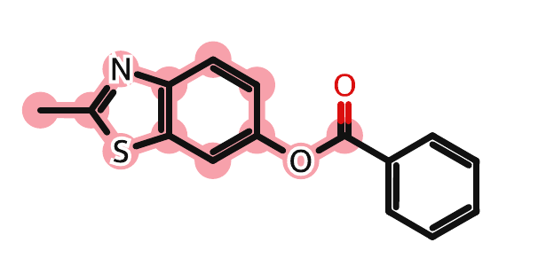
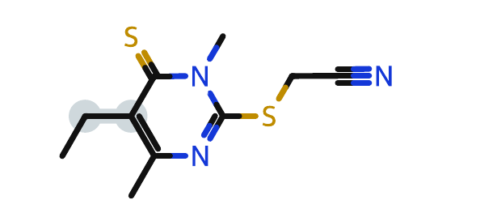
Tanimoto 0.11
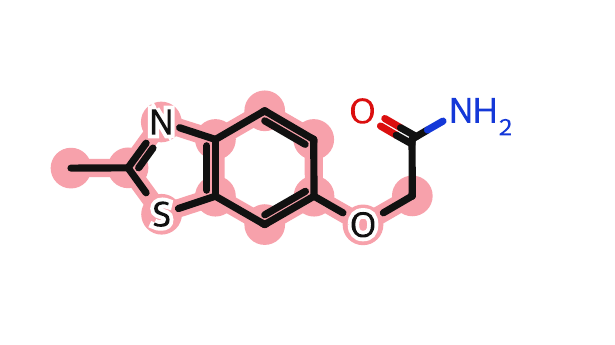
Tanimoto 0.70
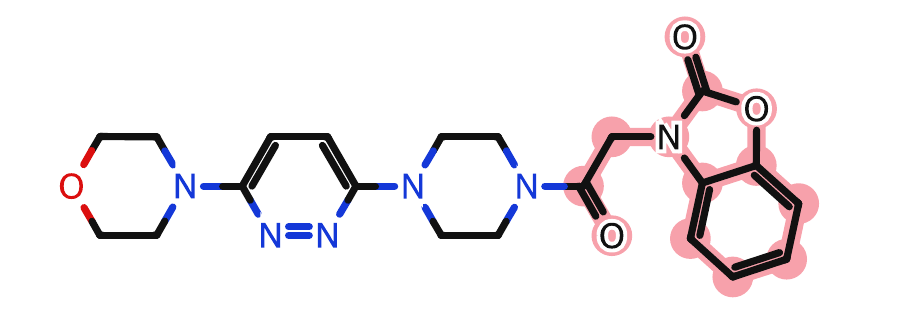
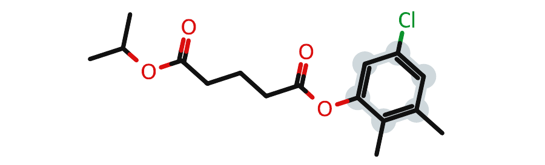
Tanimoto 0.09
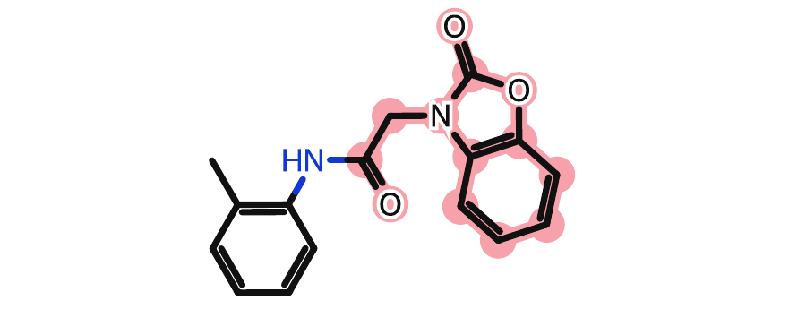
Tanimoto 0.68
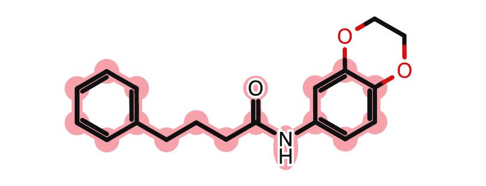
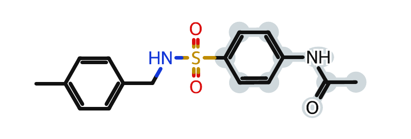
Tanimoto 0.28
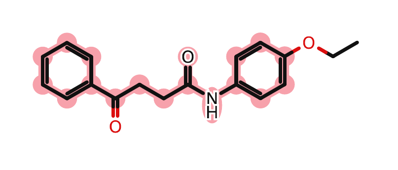
Tanimoto 0.81
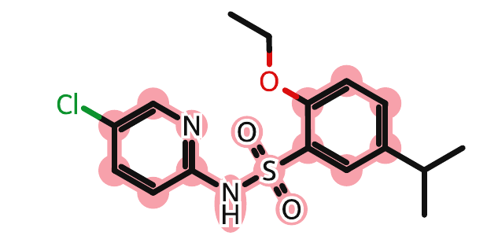
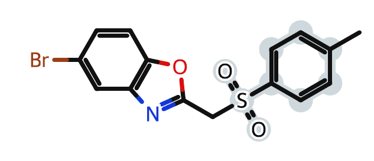
Tanimoto 0.17
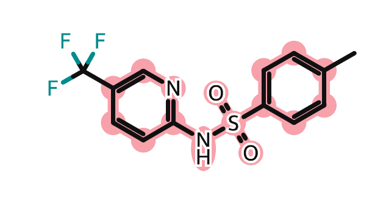
Tanimoto 0.60
Across the full evaluation, mean fingerprint similarity rose from 0.229 to 0.276 over 12,288 molecules per method in the 71-heavy-atom target pool. The four examples above were selected to illustrate which structures the guidance recovers.
How the steering works
Halfway through generating a molecule, many final structures are still possible. A Meta Flow Map samples these possible endpoints given the current state. Their rewards tell us how to adjust the next step of the generator. The map learns the base generator’s posterior once, so a different property or combination of properties can be targeted by changing the reward at sampling time.

QM9
Can one sampler target two properties at once?
We trained one multiMFM sampler for all six QM9 properties. To steer two properties together, we combined their target errors in a single reward. Across three property pairs, multiMFM lowered both errors and returned a higher fraction of structures passing PoseBusters checks than our TFG-Flow rerun.
| Method | Gap error meV ↓ | Dipole error D ↓ | PoseBusters % passing ↑ |
|---|---|---|---|
| TFG-Flow | 980.7 | 1.046 | 85.2 |
| multiMFM | 525.3 | 0.706 | 89.2 |
Mean absolute errors over all outputs. Each of three seeds produced 1,024 molecules per method.
Do the molecules reach the requested polarizability?
We compared each generated molecule’s requested polarizability with an independent estimate. For structures matching QM9, we used the existing DFT label at the optimized geometry. For unmatched structures, we used calibrated GFN2-xTB after adding hydrogens and relaxing the geometry.
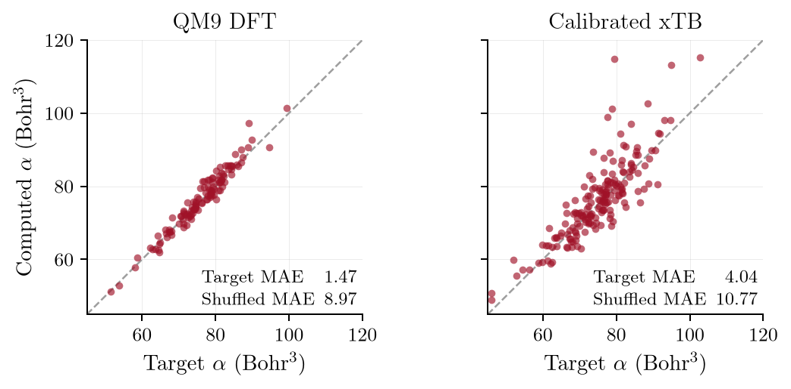
DNA
Steering a sequence toward a mechanical property
For DNA we use a discrete Meta Flow Map, dMFM. One predictor guides sampling toward a requested cyclizability, a measure of how readily DNA forms a loop. A second predictor, trained on disjoint yeast sequences, evaluates the designs. At the +1 target, guidance reduced its mean absolute error from 1.174 to 0.153. At the −1 target, error fell from 0.833 to 0.117. Each comparison used 1,000 paired 50-base sequences.
What does steering cost as sequences grow?
In a separate four-motif task, we timed the fastest tested configurations meeting the same accuracy, diversity, and uniqueness criteria. At 400 bases and a target three standard deviations above the unguided mean, dMFM took 66.8 ms per output and Feynman–Kac steering took 194.5 ms on one H200.

Citation
@misc{unneberg2026multimfm,
title = {Scalable Inference-time Steering in Biological Design
with Multimodal Meta Flow Maps},
author = {Unneberg, Ulrik and Wang, Shiyi and Franceschi, Dinko
and Xiong, Ziyu and Kozinsky, Boris and Zhong, Ellen D.
and Albergo, Michael S.},
year = {2026},
note = {Preprint}
}